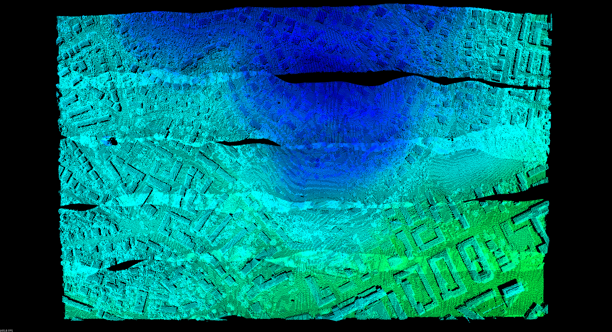
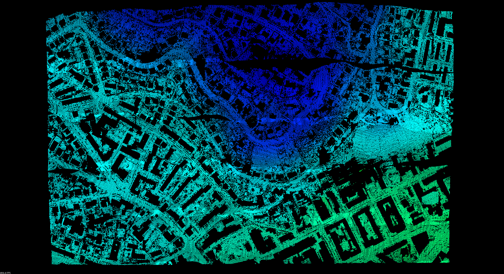
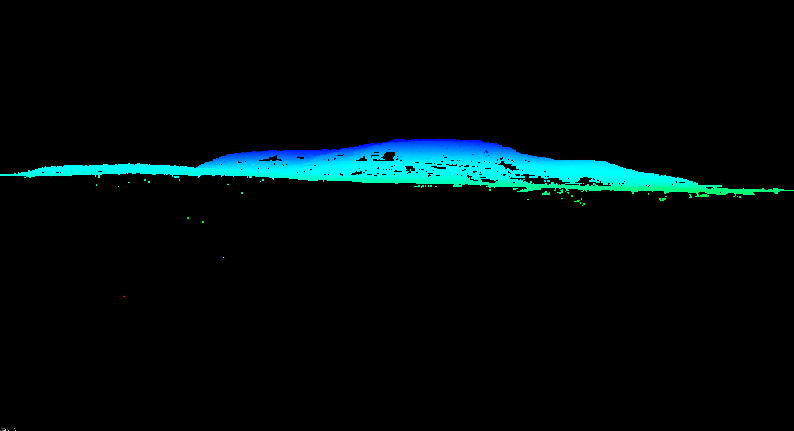
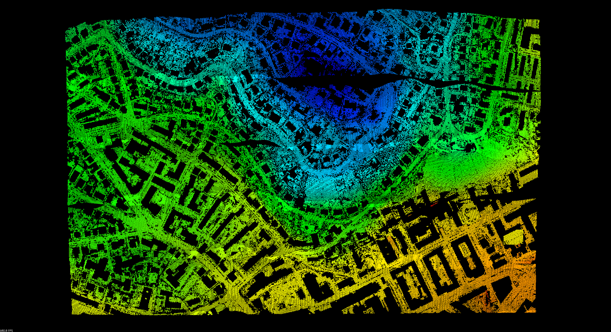
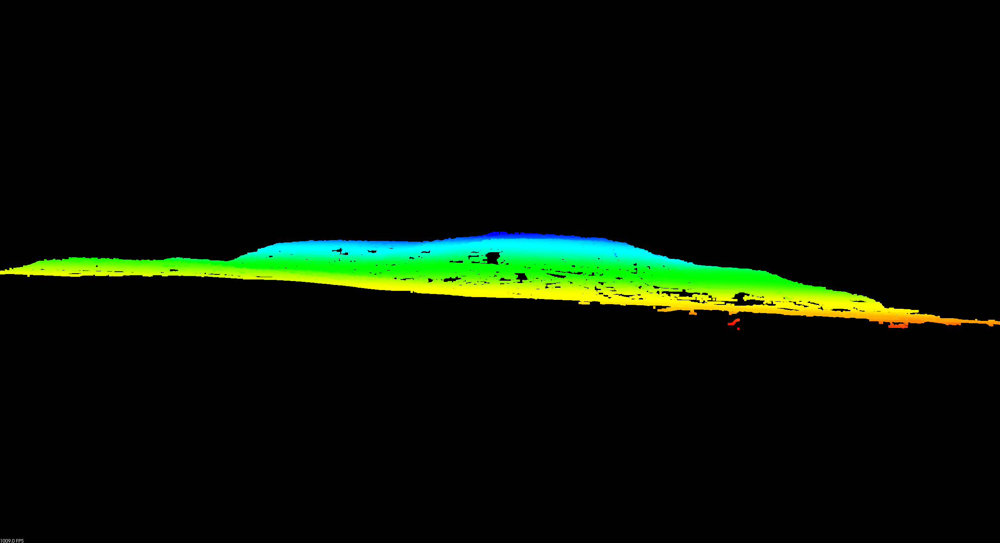
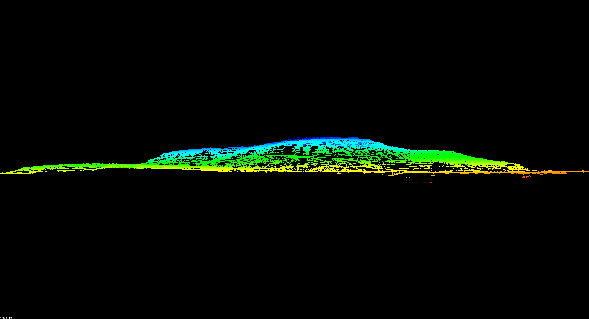
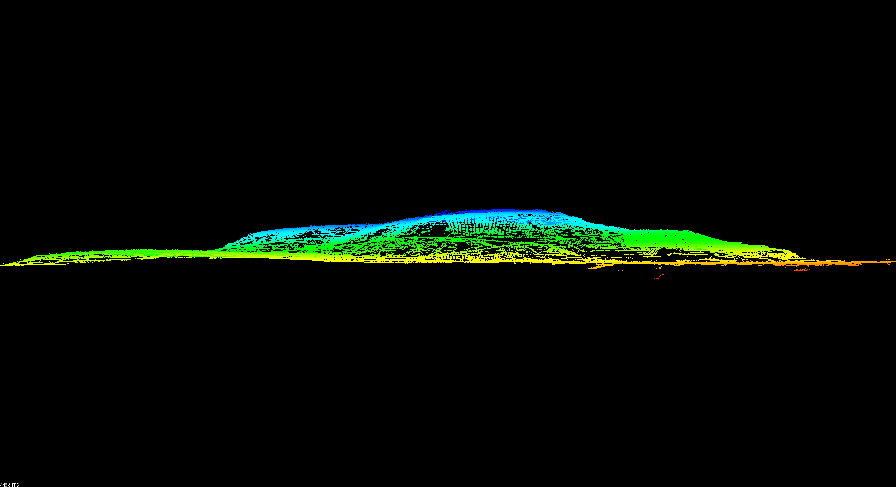

Identifying ground returns using ProgressiveMorphologicalFilter segmentation¶
| Author: | Bradley Chambers |
|---|---|
| Contact: | brad.chambers@gmail.com |
| Date: | 10/28/2015 |
Implements the Progressive Morphological Filter for segmentation of ground points.
Background¶
A complete description of the algorithm can be found in the article “A Progressive Morphological Filter for Removing Nonground Measurements from Airborne LIDAR Data” by K. Zhang, S. Chen, D. Whitman, M. Shyu, J. Yan, and C. Zhang.
For more information on how to invoke this PCL-based filter programmatically, see the ProgressiveMorphologicalFilter tutorial on the PCL website.
We have chosen to demonstrate the algorithm using data from the 2003 report “ISPRS Comparison of Filters.” For more on the data and the study itself, please see http://www.itc.nl/isprswgIII-3/filtertest/ as well as “Experimental comparison of filter algorithms for bare-earth extraction from airborne laser scanning point clouds” by G. Sithole and G. Vosselman.
First, download the dataset CSite1_orig-utm.laz and save it somewhere to disk.
{kind=link}
Using the Ground kernel¶
The pdal ground kernel can be used to filter ground returns, allowing the user to tweak filtering parameters at the command-line.
Let’s start by running pdal ground with the default parameters.
$ pdal ground -i CSite1_orig-utm.laz -o CSite1_orig-utm-ground.laz --visualize
Note
In this tutorial, we use --visualize to visualize results, but this is
only available if PCL is built with VTK and visualization support. If your
install does not support VTK/visualization, simply drop --visualize and
visualize the result with the viewer of your choice.
To get an idea of what’s happening during each iteration, you can optionally
increase the verbosity of the output. We’ll try -v4. Here we see a summary
of the parameters, along with height threshold, window size, and number of
remaining ground points.
$ pdal ground -i CSite1_orig-utm.laz -o CSite1_orig-utm-ground.laz --visualize -v4
--------------------------------------------------------------------------------
NAME: ()
HELP:
AUTHOR:
--------------------------------------------------------------------------------
process tile 0 through the pipeline
Step 1) ProgressiveMorphologicalFilter
max window size: 33
slope: 1.000000
max distance: 2.500000
initial distance: 0.150000
cell size: 1.000000
base: 2.000000
exponential: true
negative: false
Iteration 0 (height threshold = 0.150000, window size = 3.000000)...ground now has 872413 points
Iteration 1 (height threshold = 2.150000, window size = 5.000000)...ground now has 833883 points
Iteration 2 (height threshold = 2.500000, window size = 9.000000)...ground now has 757030 points
Iteration 3 (height threshold = 2.500000, window size = 17.000000)...ground now has 625333 points
Iteration 4 (height threshold = 2.500000, window size = 33.000000)...ground now has 580852 points
1366408 points filtered to 580852 following progressive morphological filter
The resulting filtered cloud can be seen in this top-down and front view. When viewed from the side, it is apparent that there are a number of low noise points that have fooled the PMF filter.
 {kind=link}
{kind=link}
To address, we introduce an alternate way to call PMF, as part of a PCL
pipeline, where we preprocess with an outlier removal step. The command is
nearly identical, replacing ground with pcl and adding a pipeline JSON
specified with -p.
{
"pipeline": {
"name": "Progressive Morphological Filter with Outlier Removal",
"version": 1.0,
"filters": [{
"name": "StatisticalOutlierRemoval",
"setMeanK": 8,
"setStddevMulThresh": 3.0
}, {
"name": "ProgressiveMorphologicalFilter"
}]
}
}
$ pdal pcl -i CSite1_orig-utm.laz -o CSite1_orig-utm-ground.laz -p sor-pmf.json --visualize -v4
--------------------------------------------------------------------------------
NAME: Progressive Morphological Filter with Outlier Removal (1.0)
HELP:
AUTHOR:
--------------------------------------------------------------------------------
process tile 0 through the pipeline
Step 1) StatisticalOutlierRemoval
8 neighbors and 3.000000 multiplier
1366408 points filtered to 1356744 following outlier removal
Step 2) ProgressiveMorphologicalFilter
max window size: 33
slope: 1.000000
max distance: 2.500000
initial distance: 0.150000
cell size: 1.000000
base: 2.000000
exponential: true
negative: false
Iteration 0 (height threshold = 0.150000, window size = 3.000000)...ground now has 874094 points
Iteration 1 (height threshold = 2.150000, window size = 5.000000)...ground now has 837141 points
Iteration 2 (height threshold = 2.500000, window size = 9.000000)...ground now has 762213 points
Iteration 3 (height threshold = 2.500000, window size = 17.000000)...ground now has 632827 points
Iteration 4 (height threshold = 2.500000, window size = 33.000000)...ground now has 596620 points
1356744 points filtered to 596620 following progressive morphological filter
The result is noticeably cleaner in both the top-down and front views.
 {kind=link}
{kind=link}
Unfortunately, you may notice that we still have a rather large building in the lower right of the image. By tweaking the parameters slightly, in this case, increasing the cell size, we can do a better job of removing such features.
{
"pipeline": {
"name": "Progressive Morphological Filter with Outlier Removal",
"version": 1.0,
"filters": [{
"name": "StatisticalOutlierRemoval",
"setMeanK": 8,
"setStddevMulThresh": 3.0
}, {
"name": "ProgressiveMorphologicalFilter",
"setCellSize": 1.5
}]
}
}
$ pdal pcl -i CSite1_orig-utm.laz -o CSite1_orig-utm-ground.laz -p sor-pmf2.json --visualize -v4
--------------------------------------------------------------------------------
NAME: Progressive Morphological Filter with Outlier Removal (1.0)
HELP:
AUTHOR:
--------------------------------------------------------------------------------
process tile 0 through the pipeline
Step 1) StatisticalOutlierRemoval
8 neighbors and 3.000000 multiplier
1366408 points filtered to 1356744 following outlier removal
Step 2) ProgressiveMorphologicalFilter
max window size: 33
slope: 1.000000
max distance: 2.500000
initial distance: 0.150000
cell size: 1.500000
base: 2.000000
exponential: true
negative: false
Iteration 0 (height threshold = 0.150000, window size = 4.500000)...ground now has 785496 points
Iteration 1 (height threshold = 2.500000, window size = 7.500000)...ground now has 728738 points
Iteration 2 (height threshold = 2.500000, window size = 13.500000)...ground now has 623385 points
Iteration 3 (height threshold = 2.500000, window size = 25.500000)...ground now has 581679 points
Iteration 4 (height threshold = 2.500000, window size = 49.500000)...ground now has 551006 points
1356744 points filtered to 551006 following progressive morphological filter
Once again, the result is noticeably cleaner in both the top-down and front views.
 

{kind=link}